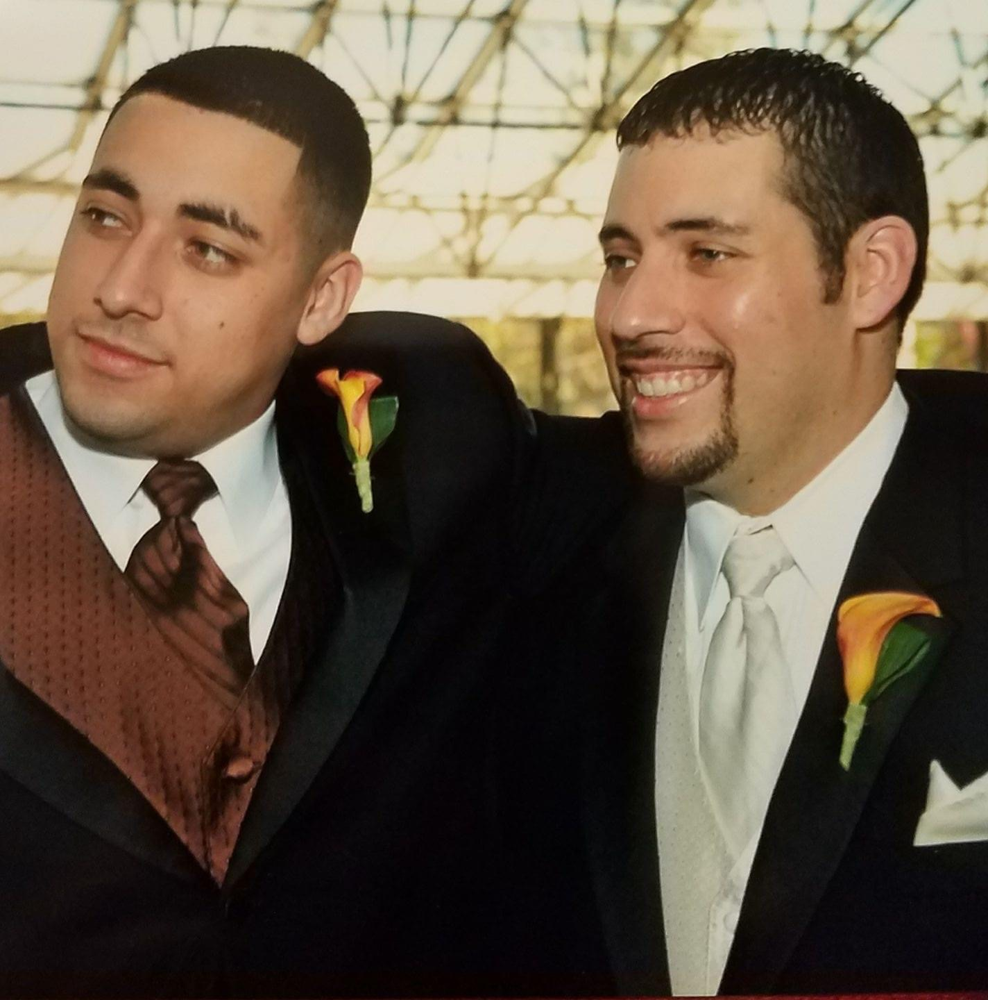

History

ΒΣΚ In 1997, several men came together in hopes to join a fraternal organization at the University at Buffalo.
Therefore, they decided to establish an organization that would represent African and Latino men. When these men decided to form this organization, a few individuals realized it would not be possible.
However, there was a smaller group among them who believed that a fraternal organization still needed to be established. The organization would represent this smaller group and their goals.
After a period of intensive research and education, these men decided to form Beta Sigma Kappa Fraternity. This fraternity would serve as a "Brotherhood of Strength and Knowledge".
Young men would be assisted by the fraternity in education and the strengthening of themselves. The Founding fathers began the process of establishing Beta Sigma Kappa Fraternity, Incorporated at the University at Buffalo during the Spring of 1998. Although, there were numerous obstacles in their path, these men never lost sight of their goal. On March 16, 1998 the Brotherhood of Beta Sigma Kappa Fraternity Incorporated was officially established at the University at Buffalo.